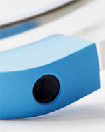

Clique sobre as áreas destacadas em vermelho
Tela
como o mundo vai aparecer
As imagens produzidas pelo Glass são bem translúcidas,
tanto que ver fotos nele não é muito legal.
Mas as outras informações, como frases ou mapas, parecem ter leitura clara.
Ah, as cores do arco íris que aparecem nas fotos abaixo não são visíveis para quem usa,
apesar de serem capturadas em foto.
Elas são resultado da luz do sol refratada em ambientes ao ar livre.

Camera
Trazendo câmera melhorada
Conexão USB-C,
habilidades de carregamento ainda mais rápidas,
bateria maior e uma variedade de novos recursos,
o produto custa US$999 (~R$4097), assim como seu antecessor.

Bateria e Gadgets
Duração Extraordinaria
O Google Glass tem uma autonomia própria na marca de 4h30 em atividade regular.
Com o PWR Glass,
essa duração pode ser até três vezes maior antes de necessitar uma recarga de energia.
O acessório também pode ser recarregado através de uma porta USB.
Sensores
Sensibilidade Digital
O Google Glass lá vai revelando alguns dos seus segredos a cada dia que passa,
e hoje ficamos a conhecer alguns dos sensores que contém e que poderão
potenciar aplicações no campo da realidade aumentada.
Eu não chegaria ao ponto de lhes chamar sensores "secretos" como é referido,
já que se trata apenas do tipo de informação que podemos obter em
qualquer smartphone actual com acelerómetros,
giroscópio, e bússola digital.